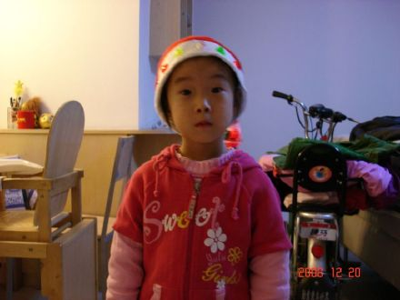
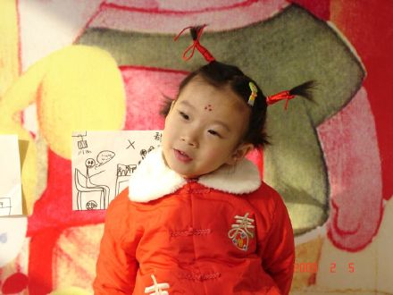

曼曼4岁这年的冬天真是难捱。
十一带曼曼回长沙参加毕业十周年同学聚会的时候，曼曼就有一点咳嗽，但是很轻微，不留心几乎注意不到。谁知道这咳嗽会成为几个月的顽疾，时轻时重，但几个月来就没彻底好过。中间还夹杂一次十分严重的肺炎，连着3天高烧40度多不退，现在我想起开车带着她赶往医院的路上，她发着40多度的高烧，闭着眼睛斜靠在阿姨身上，叫她也不答应的情景仍然心有余悸。肺炎住了一个礼拜的院，出院后没几天又是中耳炎，又去医院打吊瓶。稍微一着凉就发烧，咳嗽更是没有断过。这段时间中医、西医换了几轮，好几次排一上午的队就为给她挂个下午的老中医的号，可是她好像忽然对各种抗生素和中药都免疫了，没有一个医生的处方是管用的。
从曼曼出生开始，我和郭嘉从没有这么累、这么费心过。往往曼曼刚好一点，郭嘉和我就病倒了，发烧、咳嗽、鼻炎、气管炎，一家人病得此起彼伏的。一直唯物主义的我都忍不住怀疑房子的风水是不是有什么问题。
好不容易清净下来，收拾疲惫不堪的身心，能想起来的也就是这几个字：“健康是福”，因为生病的时候天天念叨。
都说现代人是“年轻的时候拿命换钱，年老的时候拿钱换命”，细想想，终日早出晚归，夜夜睡眠不足，我们的生活不知不觉也已跌入这轮怪圈。转眼已到己丑新年，希望我们的生活也能有新的起色。
曼曼的幼儿园新年联欢会，曼曼主动举手，第一个为全班小朋友表演节目，演唱了歌曲葫芦娃。我和郭嘉甚感欣慰，因为心里都曾为曼曼的胆小和内向隐隐的担忧过。希望曼曼在新的一年里能健康快乐的成长。

曼曼虽然总是生病，但是一点也没有影响过圣诞节，她在圣诞节的早上很高兴的在床头的袜子里发现了一盒巧克力，还在床边发现了她念叨了很久的滑板车

幼儿园的元宵音乐会，老师给小朋友都画了妆，打扮的很漂亮。曼曼在联欢会上合唱歌曲“心花开放”，还表演了舞蹈“冰糖葫芦”